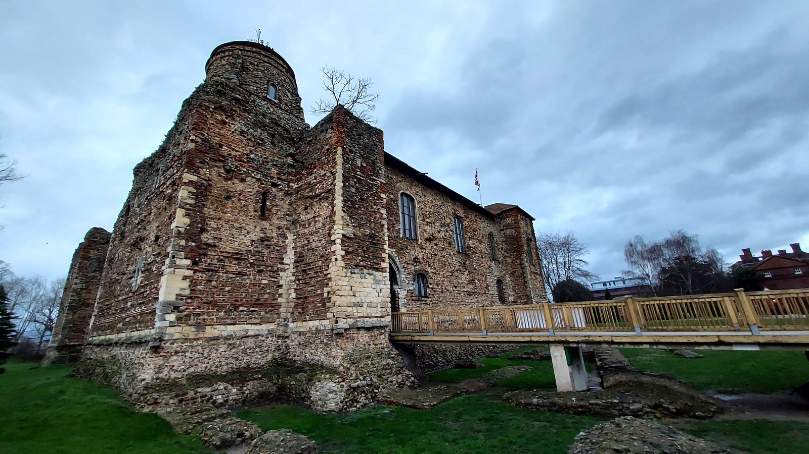

Unit 4 · Boudicca · Lesson 6
Why did others join? The Trinovantes, the veterans and the temple
The Iceni had their own reasons to rise. Why did the Trinovantes and other Britons join them, and how do you plan an answer that weighs those reasons?
Year 11 Ancient History · Present with → or space · Read on a phone with R

Connect · 3 minutes · books closed · everyone writes · press K for the timer
Two writers, two kinds of grievance
Name one grievance Tacitus gives for the Iceni’s revolt, and one Dio gives.
Join these with because, then with so, then with but:
“The veterans took land. The Trinovantes resented them.”
For example: Prasutagus’s kingdom ‘plundered by centurions’; Boudicca “scourged” and her daughters “outraged”; the chief men of the Iceni stripped of their estates; the procurator’s “rapacity”.
Money: the sums Claudius had given the leading Britons ‘were to be paid back’, as the procurator Decianus Catus maintained; and Seneca’s loan (40,000,000 sesterces in Cary’s translation), called in ‘all at once’.
because (a reason): The Trinovantes resented the veterans because the veterans took land. · so (a consequence): The veterans took land, so the Trinovantes resented them. · but (a limit, not an addition): The veterans took land, but Tacitus never says whose land it was.
Those were the Iceni’s grievances. Today: why did the Trinovantes and other Britons join them?
Learning intentions and success criteria · 2 minutes
Today’s goals
- analyse why the Trinovantes and other Britons joined the revolt
- plan an extended response with judgement sentences
- explain three reasons other Britons joined, with evidence
- build a claim–evidence chain with a complicating link
- write three judgement (topic) sentences that use nominalisation
Syllabus outcomes: AH-11-02 proposes ideas about the varying causes and effects of events and developments · AH-11-03 explains the role and significance of forces, features, events, individuals and groups in shaping the past · AH-11-05 analyses different types of sources for evidence to support a historical account or argument · AH-11-07 communicates historical understanding, applying historical knowledge, terms and concepts. Life Skills: AH-LS-06 investigates people, events or developments of the ancient world · AH-LS-11 communicates information about the past using historical terms and concepts.
Note-making · the routine for the whole course
How to structure your notes
questions and key terms, written after
short phrases, arrows (→ leads to), abbreviations (c. = about; Ann. = Annals; Agr. = Agricola)
- 1A new pageA cue column about a quarter of the page wide; title and date at the top; room for a summary at the bottom.
- 2Listen and look, then writeDon’t copy while a slide is being explained. Phrases, not sentences; a source for every claim.
- 3Write your own notes at each ✎ checkpointThen compare with the model notes, one row at a time. Add what you missed in a second colour.
- 4Write the cue questions afterwardsUse exam verbs: explain, analyse, assess. To revise, cover your notes and answer the cues.
- 5Finish with a three-sentence summaryTwo checkpoints today: who joined, and why · chains and paragraph orders.
Key vocabulary · add to the unit word wall
Words for today
| Writing terms | Meaning |
|---|---|
| Thesis | The overall judgement that answers the question, argued in every paragraph. |
| Nominalisation | Turning an action into a noun: ‘seized’ → ‘the seizure’. |
| Judgement (topic) sentence | The first sentence of a body paragraph; it answers the question. |
| Added today | Meaning |
| Claim–evidence chain | A claim linked to evidence and reasoning, plus one complicating link. |
| Complication | Evidence or a limit that makes a claim less certain; in a paragraph it becomes the Evaluate move. |
| Content terms | Meaning |
|---|---|
| Trinovantes | The people of Essex, whose land, most historians think, was taken for the Roman colony at Camulodunum. |
| Veteran / colonia | A retired soldier / a town of Roman citizens, often veterans; Camulodunum was the first in Britain. |
| Imperial cult | The worship of the emperor or deified emperors, such as the temple of the Divine Claudius. |
| Druids / Mona | Religious leaders in Gaul and Britain / their island stronghold (Anglesey), attacked by Suetonius. |
| Governor / procurator | The emperor’s army commander and chief judge in a province (Suetonius Paulinus) / the official who ran its finances and taxes (Decianus Catus). |
1 · Who joined, and why · I do — a short lecture from Tacitus
Who joined the Iceni, and why?
Roused by these insults and the dread of worse, reduced as they now were into the condition of a province, they flew to arms and stirred to revolt the Trinobantes and others who, not yet cowed by slavery, had agreed in secret conspiracy to reclaim their freedom. It was against the veterans that their hatred was most intense.
Tacitus, Annals 14.31 (written after about 113 CE) · trans. A. J. Church and W. J. Brodribb · “they” are the Iceni; “Trinobantes” is this translation’s spelling of Trinovantes
Cold call: who joined the Iceni, says Tacitus?
- 1The Trinovantes and the colonyVeterans settled at Camulodunum drove people from their houses and farms and called them ‘captives and slaves’ (14.31). The land was probably the Trinovantes’.
- 2The temple of the Divine ClaudiusAlways in sight; the men chosen as its priests had to ‘squander their whole fortunes’ (14.31).
- 3Others, with wider complaintsPeoples who had ‘agreed in secret conspiracy to reclaim their freedom’ (14.31). In the Agricola, Tacitus has the Britons complain that ‘our homes are rifled, our children torn from us, the conscription enforced’ (15): a speech he composed.
- 4The timingThe governor, Suetonius Paulinus, was far away, attacking the island of Mona.
1 · Who joined, and why · I do — the timing
Why then? The governor was far away
Thus encouraged, he made an attempt on the island of Mona, as a place from which the rebels drew reinforcements; but in doing this he left his rear open to attack.
Tacitus, Agricola 14 (98 CE) · trans. A. J. Church and W. J. Brodribb
… for these chanced to be without a leader, inasmuch as Paulinus, their commander, had gone on an expedition to Mona, an island near Britain.
Cassius Dio, Roman History 62.7, about 150 years after the revolt · trans. E. Cary (Loeb, 1925) · “these” are the Romans
Is the governor’s absence a cause of the Britons’ anger, or something else?
It explains when the revolt began and why it spread so far before Rome could answer, not why Britons were angry. Both writers agree on it. In your plan, keep causes and opportunity apart.
1 · Who joined, and why · I do — think aloud: one claim–evidence chain
A chain: claim → evidence → how it supports → what complicates it
- 1 · Claim
The colony at Camulodunum provoked the Trinovantes.
- 2 · Evidence
Rome founded the colony, about 49 CE, ‘on the conquered lands’ (Annals 12.32).
Its veterans ‘drove people out of their houses, ejected them from their farms, called them captives and slaves’ (Annals 14.31).
- 3 · How it supports
Homes and land were taken and their owners insulted, so the Trinovantes had a grievance of their own, not one borrowed from the Iceni. Tacitus names the Trinobantes among the rebels, and says the rebels’ hatred was ‘most intense’ against the veterans.
- 4 · What complicates it
Tacitus is hostile to the veterans (‘the lawlessness of the veterans’) and wrote about 55 years later. He says ‘people’, not whose: ‘the Trinovantes’ is the usual reading. Dio’s surviving account never mentions the veterans.
In a paragraph: the claim becomes the Judge, the evidence the Evidence, how it supports the Analyse, and the complication the Evaluate.
Notes checkpoint 1 of 2
Who joined the Iceni, and why
2 · Building chains · We do — the class builds the second chain
Together: a chain for the temple of the Divine Claudius
A temple also erected to the Divine Claudius was ever before their eyes, a citadel, as it seemed, of perpetual tyranny. Men chosen as priests had to squander their whole fortunes under the pretence of a religious ceremonial.
Tacitus, Annals 14.31 · trans. A. J. Church and W. J. Brodribb
- What survives: its podium, 32 by 23.5 metres, beneath Colchester Castle (Colchester Heritage Explorer).
- When: founded in the 50s CE; whether before or after Claudius’s death in 54 CE is debated.

- 1 · ClaimWhat did the temple do to Britons’ view of Roman rule?
It made Roman rule look permanent and costly, above all to the men chosen as its priests.
- 2 · EvidenceWhich two pieces: Tacitus, Dio or archaeology?
Tacitus: ‘a citadel, as it seemed, of perpetual tyranny’, ever before their eyes; its priests had to ‘squander their whole fortunes’ (14.31). Archaeology: a podium of 32 by 23.5 metres, so a huge building.
- 3 · How it supportsHow does that evidence support the claim?
A great temple to the emperor who had conquered them was a daily sign that Roman rule would last, and its costs fell on wealthy men, probably leading Britons, who could lead a rising.
- 4 · What complicates itWhat makes the claim less certain?
‘As it seemed’ is Tacitus’s view of British feeling. He does not say who the priests were, the temple’s date is debated, and Dio’s surviving account never mentions it.
2 · Building chains · We do — paragraph orders for the class question
Three ways to order a plan: which suit the question?
To what extent was the mistreatment of the Iceni the main reason for the revolt of 60 or 61 CE?
- the Iceni
- the Trinovantes
- other Britons
- personal
- economic
- political and religious
- the conquest and the colony, 43–49 CE
- Prasutagus’s death
- the attack on Mona and the rising
Which plans suit a ‘to what extent’ question, and why not the other?
In A and B every paragraph weighs one group or kind of cause against the Iceni’s mistreatment, so the plan argues. C tells the events in time order, so it narrates instead of judging. In A or B, a common choice is to test the reason the question names first, then weigh the others against it, ending with the one your thesis rates highest. The order is yours: it must suit your thesis.
Notes checkpoint 2 of 2
Claim–evidence chains and paragraph orders
3 · You do · Writing focus · 8 minutes · I do → We do → apply
Writing focus: a judgement sentence built on a noun
The class question (not your plan’s): To what extent was the mistreatment of the Iceni the main reason for the revolt of 60 or 61 CE?
Class thesis (Lesson 5): Although the outrages against Prasutagus’s family sparked the Iceni’s revolt, they were only partly its main reason, because the grievances of other Britons largely explain why it spread.
Kernel: The veterans seized land and the Trinovantes were angry. Nominalise: seized → the seizure.
Worked example · written for this lesson · ‘Trinovantian land’ is the usual reading of Annals 14.31: Tacitus does not say whose land it was
The veterans’ seizure of Trinovantian land turned an Iceni grievance into a wider revolt.
A cause as a noun (the subject)
An evaluative verb: turned · widened · sustained
The link to the thesis: it answers the question
Same question. Finish the judgement sentence for the temple, linked to the class thesis:
Start: The cost of the imperial cult …
Evidence: the men chosen as priests had to ‘squander their whole fortunes’; the temple was ‘a citadel, as it seemed, of perpetual tyranny’ (Annals 14.31).
The cost of the imperial cult widened the revolt beyond the Iceni, because a temple that ruined the men chosen as its priests seemed to many Britons a sign of ‘perpetual tyranny’.
Write your three judgement sentences first, one for each paragraph of your plan on the Catus question. Each starts with a cause as a noun and says how far it shows that Decianus Catus was responsible for the revolt (your thesis). Frame: “The [cause as a noun] [turned / widened / sustained] … into / by …” Your Writing toolkit (booklet pages 3–4): nominalisation.
3 · You do · 20 minutes in all · deconstruct first · press K for the timer
To what extent was Decianus Catus responsible for the revolt of 60 or 61 CE?
Deconstruct it: what does this question ask you to do?
- Verb
- to what extent: a judgement of degree (largely, partly, only in part), not yes or no; NESA calls it a self-explanatory term, not a glossary word
- Topic
- Decianus Catus, the procurator: how far his actions caused the revolt
- Limits
- the revolt of 60 or 61 CE; Catus as Tacitus and Dio present him; responsible: weigh his part against the other causes
- Do
- a thesis of degree on Catus’s responsibility, then paragraphs that each weigh one cause for or against it, with evidence and a complication
- Reread your Lesson 5 thesis.
- Does today’s evidence change its degree? Move it up or down if it should.
- Keep the concession: “Although …, Decianus Catus was largely / only partly responsible for the revolt, because …”
Your returned Lesson 5 thesis (on this question) and these degree words:
Check first: what must a thesis for this question contain?
A degree on Catus’s responsibility for the revolt (largely, partly, only in part), the reason for that degree, and a concession. Not yes or no, and not “many causes, all equally important”.
3 · You do · 15 minutes · judgement sentences first · then evidence and complications
Plan the full response in your booklet
| Judgement sentence | Evidence 1 | Evidence 2 | Complication | |
|---|---|---|---|---|
| Thesis | your refined thesis | |||
| ¶ 1 | ||||
| ¶ 2 | ||||
| ¶ 3 | ||||
- Three judgement sentences first: a cause as a noun, and how far it shows that Catus was responsible.
- Two pieces of evidence for each (Tacitus, Dio or archaeology), with references.
- One complication for each. Then check the order suits your thesis.
Today’s class chains are notes on the colony and the temple. At least two of your paragraphs need evidence they did not weigh: for example Annals 14.31–32 (the Iceni, Catus), Dio 62.2 (money), Agricola 14–15.
Chain template, first link started: “Claim: The plunder of Prasutagus’s kingdom …” Frame: “The [noun] of [who/what] [turned / widened / sustained] …”
Plan a second structure, organised by kind of cause (personal, political, economic, religious) rather than by group. Which better supports your thesis, and why?
Finish your notes If time · or at home
Summary: three sentences
- Why did the Trinovantes probably join the Iceni?
- What other reasons, and what opportunity, does the evidence give?
- What turns a list of reasons into a plan that argues?
The Trinovantes probably joined the Iceni because the veterans of Camulodunum took houses and farms and treated their owners as ‘captives and slaves’, and because the temple of the Divine Claudius made Roman rule look permanent while ruining the men chosen as its priests. Tacitus adds others who had ‘agreed in secret conspiracy to reclaim their freedom’ and gives the Britons wider complaints in a speech he composed, and both he and Dio say the revolt began while the governor was attacking Mona, which was an opportunity rather than a grievance. A plan argues when each paragraph opens with a judgement sentence that weighs one cause, backed by two pieces of evidence and a complication.
Check · 4 minutes · hinge: A, B, C or D on “3, 2, 1, show” · then pairs
Does each judgement sentence answer the question?
Which is a judgement sentence for the class question: To what extent was the mistreatment of the Iceni the main reason for the revolt of 60 or 61 CE?
- AIn about 49 CE, Rome settled a strong body of veterans at Camulodunum on conquered land.
- BTacitus reports that the veterans at Camulodunum called the people there captives and slaves.
- CThe veterans’ seizures at Camulodunum made the Iceni’s mistreatment only one reason for a wider revolt.
- DThe colony at Camulodunum was a very important and interesting part of Roman Britain.
A narrates a fact. B is evidence: it belongs after the judgement. D judges, but vaguely: no cause, and no answer to “to what extent”.
For each of your partner’s judgement sentences, ask:
- Does it start from a cause, named as a noun?
- Does it say how far that cause shows that Catus was responsible for the revolt?
- Could two pieces of evidence back it?
Mark each sentence ✓ or ?, and fix one together.
Exit ticket · 4 minutes · before you leave
Finish it
“My strongest paragraph will argue … because …”
one cause named precisely, as a noun group (not “the stuff the Romans did”); how far it shows that Catus was responsible for the revolt; and a because that points to evidence: a writer and a passage, or the archaeology.
Then check yourself against today’s three “I can” statements. Next lesson: the campaign begins: Camulodunum, the Ninth Legion, Londinium and Verulamium.
Practice and review · 1 of 4 · true, false, justify
True or false? Justify your answer
- 1Tacitus names the Trinovantes among the peoples who joined the Iceni. True — the Iceni “stirred to revolt the Trinobantes and others” (Annals 14.31; Trinobantes is the translation’s spelling).
- 2Tacitus says by name that the veterans took the Trinovantes’ land. False — he says they drove ‘people’ from their houses and farms; the Trinovantes is the usual reading, because Camulodunum stood on their land.
- 3Dio’s surviving account blames the veterans and the temple. False — Dio gives money (Claudius’s grants reclaimed; Seneca’s loan called in) and the governor’s absence; he never mentions the veterans or the temple.
- 4The temple of the Divine Claudius was built after the revolt. False — it was founded in the 50s CE (before or after Claudius’s death in 54 is debated); Tacitus says it was ever before the Britons’ eyes.
- 5When the revolt began, the governor Suetonius Paulinus was attacking Mona. True — “he left his rear open to attack” (Agricola 14); Dio agrees (62.7).
- 6The Britons’ complaints in Agricola 15 are their own recorded words. False — Tacitus composed the speech, nearly 40 years after the revolt; it shows what a Roman thought Britons resented.
Practice and review · 2 of 4 · writing · nominalisation and judgement sentences
Turn actions into nouns, then make the noun argue
Rewrite each so the action becomes a noun group that could start a sentence.
- Rome founded a colony at Camulodunum. Rome’s foundation of a colony at Camulodunum …
- The governor was away on Mona. The governor’s absence on Mona …
- Catus demanded that Claudius’s grants be paid back. Catus’s demand for the repayment of Claudius’s grants …
Write one judgement sentence, starting from a noun, for: How useful is Agricola 15 for explaining why other Britons joined the revolt?
Tacitus’s composition of the Britons’ complaints makes Agricola 15 useful evidence of what a Roman senator thought Britons resented, but weak evidence of what they themselves said.
Practice and review · 3 of 4 · extension · sort the causes
What kind of cause is each? Some are more than one
Sort each into personal, political, economic or religious, or say why it is none of them.
| Evidence | Kind, and why |
|---|---|
| Veterans drove people from their houses and farms (Annals 14.31) | economic and political: land lost, and owners called ‘captives and slaves’: a loss of status as well as property |
| The temple ‘was ever before their eyes’ (14.31) | religious and political: worship of a conquering emperor; in Tacitus’s account it seemed to Britons a sign of lasting rule |
| Priests had to ‘squander their whole fortunes’ (14.31) | economic: a religious setting, but the grievance is the cost |
| Claudius’s grants ‘were to be paid back’ (Dio 62.2) | economic: a money demand by the procurator |
| ‘our children torn from us, the conscription enforced’ (Agricola 15) | personal and political: families broken by Roman recruiting; but in a speech Tacitus composed |
| Suetonius away on Mona (Agricola 14) | none: an opportunity: it explains when the revolt began, not why Britons were angry |
Then: would a plan by kind of cause support your thesis better than a plan by group? Why?
Practice and review · 4 of 4 · cover your notes and answer from memory
Quick checks
- Who did the Iceni stir to revolt, according to Tacitus? The Trinobantes (Trinovantes) and others who had ‘agreed in secret conspiracy to reclaim their freedom’ (Annals 14.31).
- Explain why the Trinovantes probably joined. The colony stood on ‘the conquered lands’ (12.32), probably theirs; its veterans took houses and farms and called the owners ‘captives and slaves’, with soldiers backing them (14.31).
- What did the temple of the Divine Claudius mean to Britons, in Tacitus’s account? ‘a citadel, as it seemed, of perpetual tyranny’, always in sight; and its priests were ruined by its costs (14.31).
- Why did the revolt begin when it did? The governor, Suetonius Paulinus, was attacking Mona: ‘he left his rear open to attack’ (Agricola 14; also Dio 62.7). An opportunity, not a grievance.
- Name the four links of a claim–evidence chain. Claim → evidence (two pieces, with references) → how it supports the claim → one complication.
- What makes a sentence a judgement (topic) sentence? It opens a body paragraph and answers the question: a cause as a noun, an evaluative verb, and a link to the thesis.
Sources and credits
Where everything comes from
Tacitus, Annals 12.32 and 14.29–32: trans. A. J. Church and W. J. Brodribb (1876, public domain), Perseus Digital Library (CC BY-SA 3.0 US). Tacitus, Agricola 14–15: trans. A. J. Church and W. J. Brodribb (1877, public domain), Perseus (CC BY-SA 3.0 US). Cassius Dio, Roman History 62.2 and 62.7: trans. E. Cary (Loeb, vol. VIII, 1925), LacusCurtius (public domain in the US; quoted briefly).
Facts: Colchester Heritage Explorer, MCC1830, Temple of Claudius; University of Warwick, Warwick Classics Network, “Boudica’s Revolt” (adapted from C. C. Gillespie, Boudica: Warrior Woman of Roman Britain, 2018); Classical Numismatic Group, record of the Claudius aureus. Map drawn for this lesson; coastline from Natural Earth (public domain). NESA, Glossary of key words.
Outcomes and content: NSW Education Standards Authority (NESA), Ancient History 11–12 Syllabus (2024). © NESA.
- Colchester Castle, built on the podium of the Roman temple of the Divine Claudius at Camulodunum · Photo: Jonathan Dann · CC BY-SA 4.0 · source
- A gold aureus of Claudius, struck at Rome in 46–47 CE, with a triumphal arch inscribed DE BRITANN (Classical Numismatic Group) · Photo: Classical Numismatic Group, Inc. (cngcoins.com) · CC BY-SA 2.5 · source


All images are openly licensed, and were resized for the web. Each is shared under the licence shown.